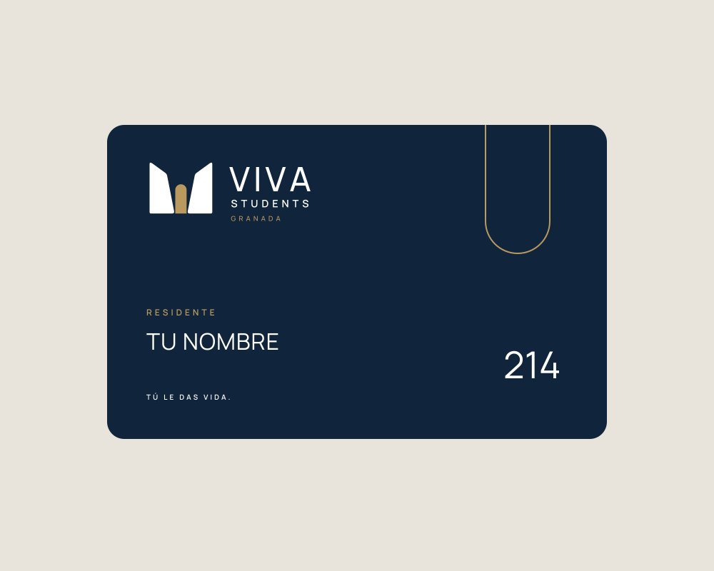
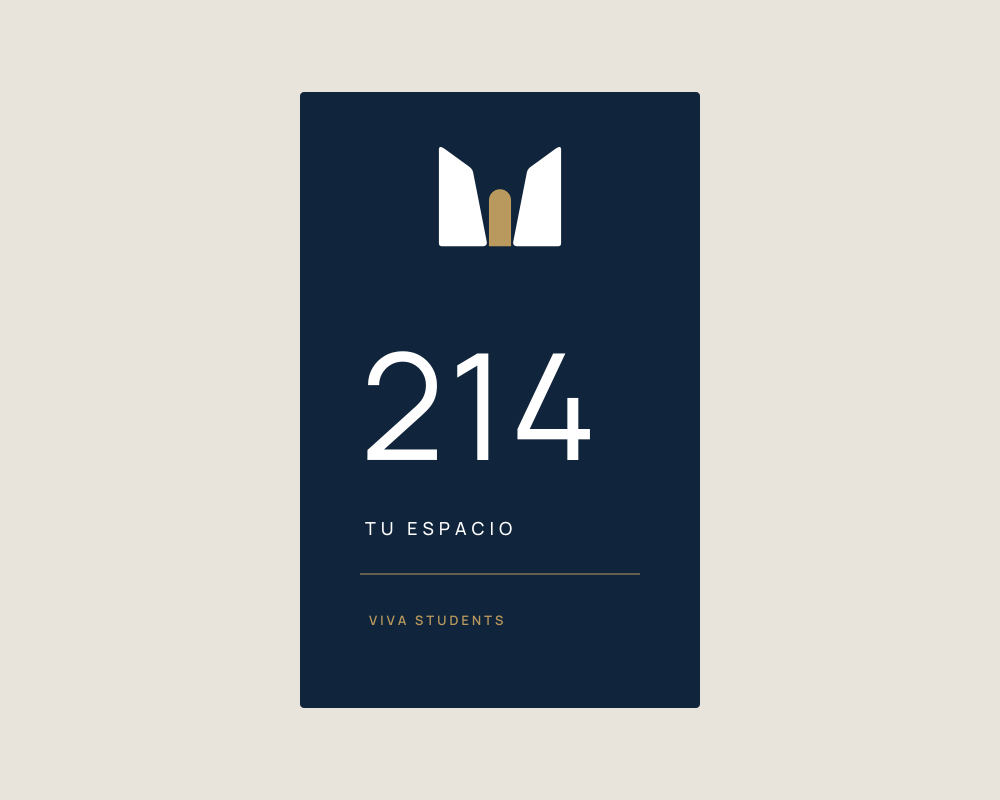
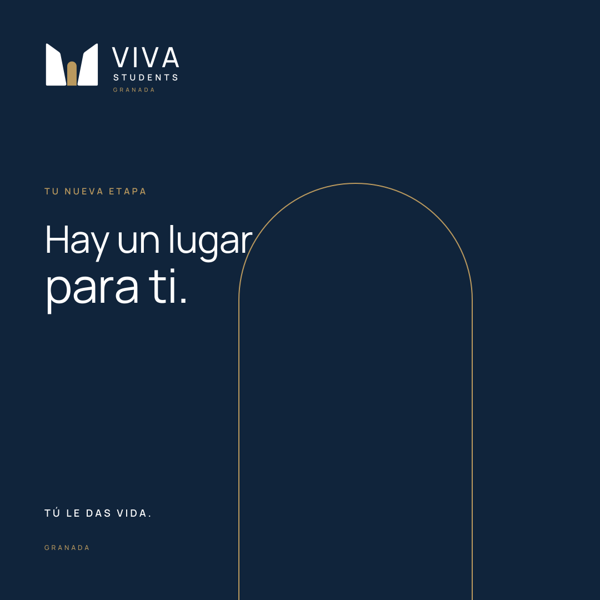
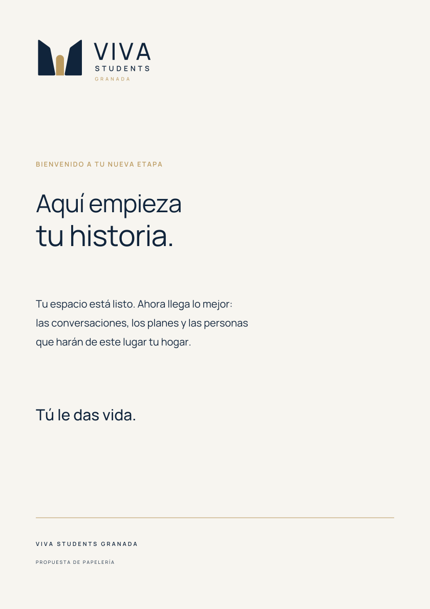

UMBRAL / EL UNIVERSO DE NUESTRA MARCA
Una puerta abierta.
Una vida por delante.
Una identidad que recibe, conecta y acompaña. Diseñada alrededor de una idea: el edificio pone el espacio; las personas le dan vida.
01 / EL SÍMBOLO
El comienzo
de algo tuyo.
Dos planos en azul noche abren un espacio central en ámbar. La geometría sugiere un umbral: cruzar una puerta y encontrar tu lugar.
La identidad combina una presencia arquitectónica serena con un gesto cálido de bienvenida. El nombre se mantiene claro, sin depender del símbolo para ser reconocido.
02 / PALETA DE COLOR
Confianza.
Calma. Calidez.
El azul noche sostiene la identidad. El marfil deja respirar la fotografía y el contenido. El ámbar guía los pequeños gestos: una puerta, un botón, un detalle.
Usamos azul sobre marfil para el texto. El ámbar actúa como acento; no como color de párrafos pequeños sobre fondos claros.
Azul noche
#10243BBASE / CONFIANZAÁmbar
#BA995EACENTO / BIENVENIDAMarfil
#F7F5F0FONDO / CLARIDADArena
#E9E4DBAPOYO / EQUILIBRIO03 / TIPOGRAFÍA
Una voz clara.
Un acento humano.
Manrope aporta claridad a títulos, navegación y cuerpo de texto. Instrument Serif Italic aparece en palabras concretas para añadir una pausa editorial. El logo conserva sus letras trazadas en vector.
Tu nueva etapa.
ABCDEFGHIJKLMNÑOPQRSTUVWXYZ
abcdefghijklmnñopqrstuvwxyz · 0123456789
Tu próximo hogar.
04 / LA MARCA EN LA VIDA REAL
De la pantalla
a tu día a día.
La misma lógica en una tarjeta, una puerta, una bienvenida y una publicación. Estas aplicaciones son propuestas de diseño; no modificaciones de las instalaciones fotografiadas.

TARJETA DE ACCESO
SEÑALÉTICA
REDES SOCIALES / 1080 × 1080
PAPELERÍA05 / CÓMO HABLAMOS
Cerca de ti.
Sin dejar de ser claros.
Hablamos de tú, con naturalidad y respeto. Contamos momentos cotidianos y características que existen. Evitamos promesas que la residencia no pueda sostener.
Mensaje de marca: Tú le das vida.
Bienvenida: Aquí empieza tu historia.
Web: Encuentra tu habitación.
Comunidad: Tu espacio. Tu gente. Tu momento.
El logo necesita aire.
Reserva alrededor al menos un cuarto de la altura del símbolo. Mínimos orientativos: 180 px para la composición horizontal y 24 px para el símbolo. En tamaños pequeños, utiliza el símbolo sin las líneas secundarias.
La fotografía cuenta la verdad.
Usamos imágenes de la residencia real, con luz natural y los espacios reconocibles. No inventamos habitaciones, vistas, servicios ni personas que aparenten ser residentes reales.
Una identidad que se mueve.
Animación sugerida: aparecen los dos planos, se abre el centro ámbar y entra el nombre. Tres segundos con un final estable para poder leer. El gesto es una bienvenida, no un efecto por sí mismo.
Siempre, la misma marca.
No deformar, girar ni añadir sombras al logo. Elegir una variante que contraste con el fondo. Conservar proporciones y no reconstruir el nombre con otra tipografía.
LISTO PARA SEGUIR CREANDO
Todo en un mismo lugar.
Logos SVG y PNG, colores, tipografías, aplicaciones,
plantillas y manual de identidad.